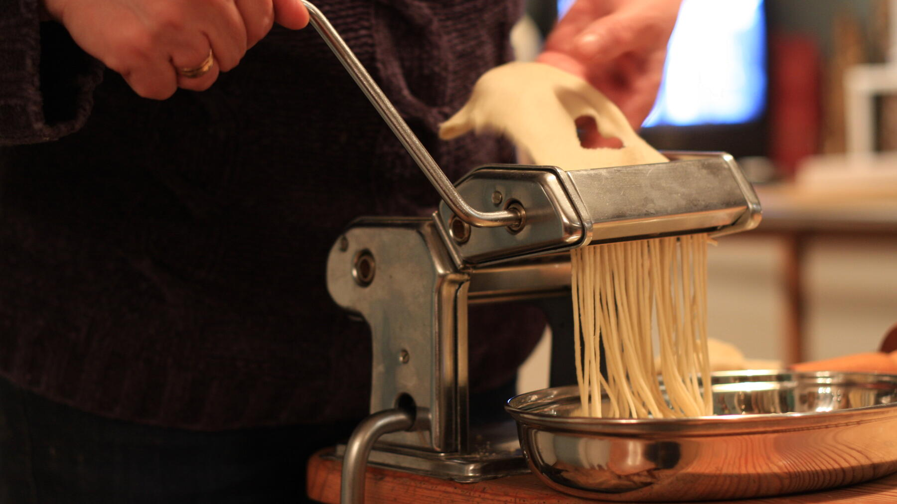

Zurück zur Übersicht
Pasta-Teig
Klassischer Eierteig mit Olivenöl, eine Viertelstunde von Hand geknetet, für Tagliatelle oder Ravioli.
- Zeit
- 45 Min.
- Schwierigkeit
- mittel
- Kategorie
- Teige & Grundrezepte
- Ernährung
- vegetarisch
Zutaten
Portionen
- 300 gWeizenmehl
- 1 TLSalz
- 3Eier, verquirlt
- 3 TLOlivenöl
- Wasser nach Bedarf
Zubereitung
- Das Mehl auf eine Arbeitsfläche geben und eine Vertiefung hineindrücken. Die verquirlten Eier, Salz und Olivenöl hineingießen und mit einer Gabel verrühren, dabei nach und nach Mehl vom Rand einarbeiten.
- Sobald die Mischung dicker wird, mit den Händen weitermischen. Ist der Teig zu trocken, ein wenig Wasser einarbeiten. Er soll klumpig und grob sein, aber nicht zu feucht.
- Den Teig etwa eine Viertelstunde kräftig wie Brotteig kneten: mit dem Handballen von sich wegdrücken, wieder heranziehen und erneut wegkneten, bis er glatt und geschmeidig ist.
- Zwei Kugeln formen und noch etwa eine Viertelstunde ruhen lassen.
- Mit der Pastamaschine oder mit dem Nudelholz auf einem großen Brett jede Kugel sehr dünn ausrollen.
- Für Ravioli weiterverwenden oder für Tagliatelle die Teigplatte einmal durchschneiden, aufrollen und etwa ½ cm breite Streifen abschneiden. Auseinanderwickeln und auf ein bemehltes Geschirrtuch legen.
- In kochendem Salzwasser 2–3 Minuten al dente kochen.
Tipp: Die Menge reicht für zwei gute Esser als Hauptmahlzeit.